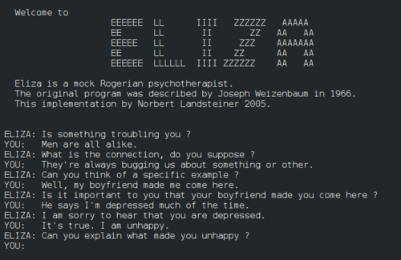

What is a Chatbot?
A chatbot (originally chatterbot) is a software application or web interface designed to have textual or spoken conversations. Modern chatbots are typically online and use generative artificial intelligence systems that are capable of maintaining a conversation with a user in natural language and simulating the way a human would behave as a conversational partner.
History
Chatbots have existed since the late 1960s. Among the most notable early chatbots are ELIZA (1966) and PARRY (1972). More recent notable programs include A.L.I.C.E., Jabberwacky and D.U.D.E (Agence Nationale de la Recherche and CNRS 2006).
Modern Chatbots
Modern chatbots like ChatGPT are often based on large language models called generative pre-trained transformers (GPT). They are based on a deep learning architecture called the transformer, which contains artificial neural networks. They learn how to generate text by being trained on a large text corpus, which provides a solid foundation for the model to perform well on downstream tasks with limited amounts of task-specific data.
Application
A major area where chatbots have long been used is in customer service and support, with various sorts of virtual assistants. Companies spanning a wide range of industries have begun using the latest generative artificial intelligence technologies to power more advanced developments in such areas.
{kind=link}
{kind=link}
{kind=link}
{kind=link}
#/media/File:Google_Gemini_logo.svg){kind=link}
{kind=link}
{kind=link}